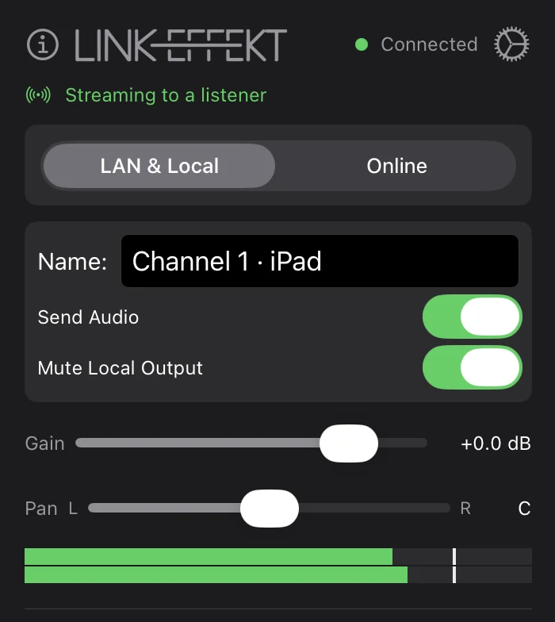
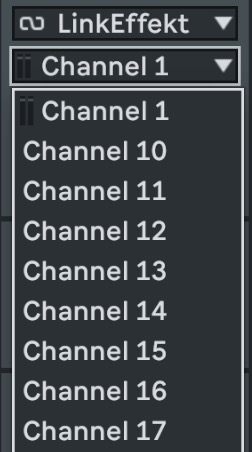
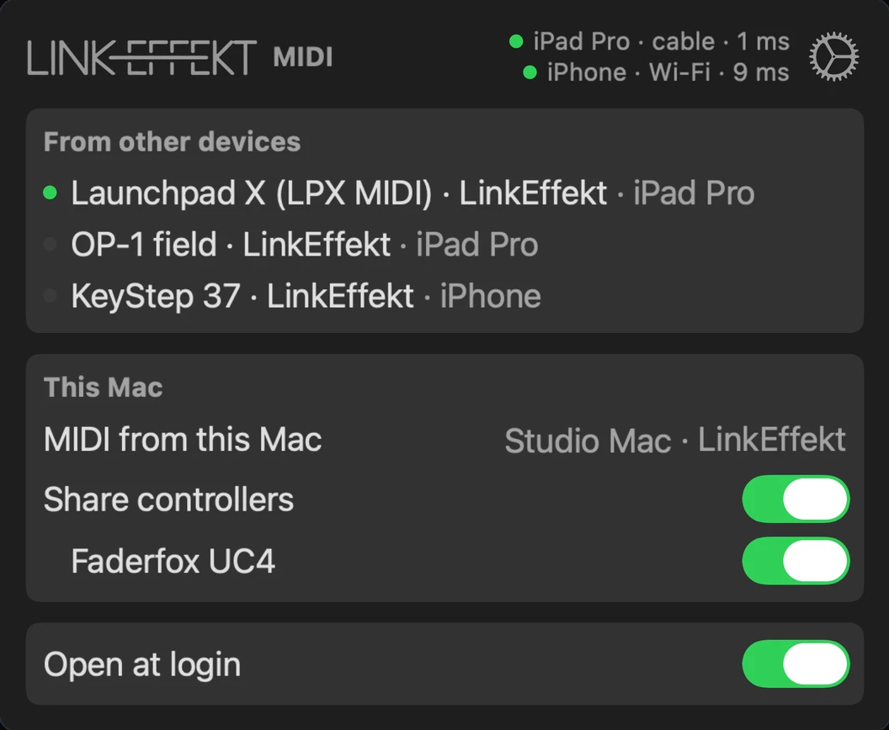

Use your iPad with Ableton Live
Ableton Live does not run on an iPad. The iPad still works with Live as a sketchpad with Ableton Note, as a controller or as a rack of synths. Since Live 12.4 every iPad track can be its own input in Live over Wi-Fi, without an audio interface.

Wi-Fi or Ethernet
Can you run Ableton on an iPad?
No. Ableton Live is software for macOS and Windows, and there is no version of Live in the App Store. What Ableton makes for the iPad and the iPhone is Ableton Note.
Note is a sketchpad. It has drum kits, synths and samplers from Live, a Session View with eight tracks and eight scenes, and a piano roll for melodies. When an idea is worth keeping, Ableton Cloud sends the Note Set to Live’s browser. You open it on the computer with the same sounds and carry on there. Ableton also gives every Note user Live 12 Lite for free through the app.
So Note is where a track can start. For everything below Live runs on the computer and the iPad joins it.
Control Ableton Live from an iPad
Controller apps turn the iPad into a touch surface for Live. They put clips, the mixer and device parameters on the touchscreen. One example is touchAble Pro, which its App Store page describes as a way to produce and perform in Live with everything at your fingertips.
These apps move no audio. They are a remote for Live, and they sit well next to the audio and MIDI setup in this guide. If you want to take control of Live with a hardware MIDI controller that is plugged into the iPad, that is covered under MIDI.
Record iPad apps in Ableton Live
An iPad full of synths, drum machines and samplers is an instrument rack for Live. There are three ways to connect it and get its audio onto a Live track.
| Way | You need | You get |
|---|---|---|
| Audio interface | An interface with free inputs on the computer and an audio cable from the iPad. | The iPad’s mix on a stereo input. Timing and latency are yours to set. |
| USB cable to a Mac | A Mac and a USB cable. In Audio MIDI Setup you click Enable next to the iPad. | The iPad as an audio input device on the Mac. |
| Link Audio | Live 12.4 or later and both devices on the same network. | Every iPad track as its own input in Live, in sync with Live’s clips. |
The cable way is in Apple’s guide Set up audio devices in Audio MIDI Setup on Mac. The rest of this page is about the third way.
What is Ableton Link Audio?
Ableton Link keeps the tempo and the beat of apps and devices in time over a local network. Link Audio came with Live 12.4 in May 2026 and adds the sound. A device in the Link session offers audio channels, and Live lists them as inputs next to the inputs of your audio interface. Recordings line up with your set because Live compensates the latency of the network.
Link Audio runs over Wi-Fi and over wired Ethernet. Ableton recommends the wire for the most stable connection. It is built into Live, Push 3 standalone, Move and Note. Move and Note send audio and do not receive it. The details are in Ableton’s Link Audio FAQ.
An app needs Link Audio built in to show up in Live. For every app that does not have it, LinkEffekt adds it from the outside. LinkEffekt Send is an AUv3 plugin. Put it on a track in a host like AUM, Loopy Pro, Drambo, Logic Pro for iPad, Cubasis or GarageBand, and that track becomes a Link Audio channel. Ableton lists LinkEffekt among its Link-enabled products.
Ableton iPad setup with Link Audio
- Open the LinkEffekt app once on the iPad and allow Local Network access.
- Turn on Ableton Link in your iPad host. In Live open Settings > Link and turn on Link and Link Audio.
- On the iPad put LinkEffekt Send on each track you want in Live and give it a name, for example Bass. In the Send’s gear menu turn on Ableton Link and Share Audio. You do this once.
- In Live’s Link settings turn on Sync to Incoming Audio.
- On an audio track in Live set the input to LinkEffekt, pick the channel and set Monitor to In.
- Raise the Latency slider in Live’s Link settings until playback is stable. Then record.
Listen through Live. The Send mutes its track on the iPad, so you hear every track once and in sync with Live’s clips. Live delays its own playback by the latency you set. That is what Sync to Incoming Audio does, and it is why the iPad’s speaker and Live’s do not line up by ear.
Loops, sequencers and drum machines that follow Ableton Link arrive in sync, however high you set the latency. Parts you play by hand reach Live later by that amount.
Only one device in the Link session can have Sync to Incoming Audio on. Ableton’s FAQ says Link Audio does not work otherwise.
Wi-Fi can pause for a moment. For a stage or a long session put both devices on wired Ethernet. A USB-C Ethernet adapter on the iPad is enough.
Hardware plugged into the iPad goes the same way. The audio of a synth or a groovebox comes into the iPad host as an input and through a Send to Live. The same steps with more detail are in the manual under Record iOS audio in Ableton Live.
Stream Live’s tracks to the iPad
It works the other way round too. Live offers every track with an audio output as a Link Audio channel, returns and Main included. On the iPad LinkEffekt Receive picks them up.
- In Live’s Link settings turn Sync to Incoming Audio off.
- On the iPad load LinkEffekt Receive and pick a Live track under Now Receiving.
- Turn on Bar Sync. The status reads On your metronome · one bar later.
Live does not send its tracks ahead of time, so without Bar Sync they arrive behind your beat. Bar Sync holds them back to one full bar, which puts them in sync with the apps on the iPad.
For both directions at once leave Sync to Incoming Audio on and use Bar Sync on the iPad. Each player then listens to their own device. More under Ableton Live 12.4+ in the manual.
MIDI between iPad and Ableton Live
Audio is half of a hybrid setup. Since LinkEffekt 2.1 MIDI travels the same way, in both directions.

LinkEffekt in the Mac menu bar. Controllers from the iPad and the iPhone appear as MIDI ports for Live.
- Your controllers on both devices. A MIDI controller plugged into the Mac also works on the iPad, and one plugged into the iPad shows up in Live. Each controller gets a virtual MIDI port named after the hardware. The port stays the same when you plug the controller into the other device, so your MIDI mappings in Live keep working.
- The iPad as an instrument for Live. The iPad itself becomes a MIDI port on the Mac. Send a MIDI track in Live to that port and Live plays a synth on the iPad. Its audio comes back over Link Audio.
- Clock for gear without Link. Hardware plugged into the iPad or the Mac gets MIDI clock from Ableton Link. It follows Live’s tempo and starts on the one. Each piece of gear has its own offset in steps of 0.1 ms. The guide Sync external gear to Ableton Link shows the setup.
On the Mac LinkEffekt is an app in the menu bar. On the iPad you load the plugin LinkEffekt MIDI once as a MIDI effect in your host. In Live open Settings > Link, Tempo & MIDI and turn on Track or Remote for the port that ends in · LinkEffekt. Turn Track and Sync off for the controller’s own port, otherwise notes arrive twice.
The MIDI part needs a Mac with Apple Silicon and macOS 14 or later. iPad and Mac find each other on the same Wi-Fi or over a USB cable. The manual has the full chapter on MIDI controllers.
What you need
- Ableton Live 12.4 or later on the computer.
- An iPad or iPhone with iOS 15 or later and an AUv3 host. AUM, Loopy Pro, Drambo, Logic Pro for iPad, Cubasis and GarageBand all work.
- Both devices on the same network.
- LinkEffekt from the App Store.
One Send, one Receive and Link to MIDI clock for one piece of gear are free with no time limit. That is enough to try this guide with one track. LinkEffekt Unlimited is a one-time purchase. It adds unlimited Sends and Receives, MIDI between your devices and clock for all your gear.
Try it with one iPad track.
LinkEffekt is free to start on iPhone and iPad and runs inside the host you already use.
Questions about Ableton and the iPad
Is there an Ableton Live app for iPad?
No. Ableton’s app for iPad and iPhone is Note, a sketchpad for new ideas. Live runs on a Mac or a Windows computer.
Is Ableton Live Lite free?
According to Ableton, Live 12 Lite is free for all Note users through the app. It runs on the computer and not on the iPad.
Do I need an audio interface to record my iPad in Ableton Live?
No. With Live 12.4 or later the audio travels over your network with Link Audio. Each iPad track with LinkEffekt Send shows up as its own input in Live.
Does this work with Ableton Live on Windows?
Link Audio is part of Live 12.4 on every computer Live runs on, and the audio part of this guide needs nothing else on the computer. I test with Live on a Mac. The MIDI part needs the LinkEffekt app for Mac.
How much latency does Link Audio add?
It depends on your network. You set it with the Latency slider in Live’s Link settings. With Sync to Incoming Audio on, Live shifts its own playback by that amount, so the iPad tracks stay in sync with Live’s clips.
Can I run a Live track through effects on the iPad?
You can stream a Live track to the iPad and process it there. A round trip back into the same Live set does not line up with the original yet.